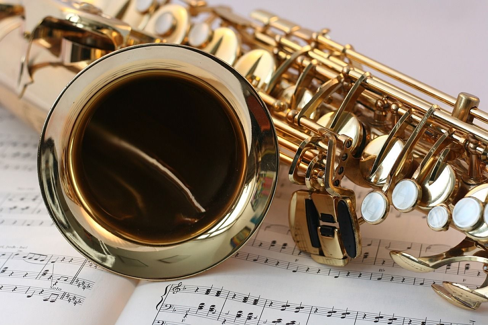

26 Sep 2018 - Allen Z
You may be wondering, what is “All-State”?
Beginning each fall tens of thousands of high school students drive to a nearby high school and audition. Individual musicians perform selected music for a panel of judges who rank each instrument or voice part. A select group of musicians advances to compete against musicians from other regions in their area. The highest-ranking musicians judged at the area competitions qualify to perform in one of All-State Bands, Orchestras, and Choirs. These All-State ensembles rehearse for multiple days and are often directed by nationally renowned directors. After the rehearsals, on the final day, there is a live performance for the public.
The process of advancing to All-State is a competitive process. It requires talent, diligence, and understanding of the audition process. Often, due to lack of auditioning experience, talented players will mess up and choke. To help alleviate the stress and anxiety of auditioning for the All-State or All-Region band, we discussed the ins and outs of the process with two All-state and two All-Region players in concert band, orchestra, jazz band, and choir. The interviews are recorded below:
Are you in orchestra, band, or choir?
Student 1: Choir
Student 2: I’m in the GDYO orchestra, and I’ve been part of the all region orchestra for the past two years (can’t do this year because of VEX).
Student 3: I am in my school’s concert band
Student 4: Yes, jazz band
What instrument do you play? Or, what voice type are you?
Student 1: Bass 2
Student 2: I’m in the violin first section
Student 3: Alto Saxophone
Student 4: Alto saxophone
What chair were you at all-state or all-region?
Student 1: 2nd at all-region, 1st alternate all-state
Student 2: I can’t remember exactly but I was top 10 at all-region
Student 3: 1st band 4th chair all-region
Student 4: 3rd chair all-state
How much do you practice each day?
Student 1: 2 hours each day
Student 2: Just under an hour per day on average.
Student 3: 30 minutes per day
Student 4: About 45 minutes
Can you describe a normal practice session? (time spent warming up, scales, etc.)
Student 1: 15 minutes of warm-ups, a couple minutes of scales, a couple sight-reading etudes, and then practicing the all-region audition pieces
Student 2: I spend five minutes tuning and playing a couple scales, then I start practicing my solo pieces before switching over to my orchestra material.
Student 3: Warmup for 10 minutes with long tones, scales, and overtones. I spend the next 20 minutes working on all-region music or solos. Right before I finish practicing, I play a long tone as a cool down.
Student 4: First 10-15 minutes: Scale patterns, modes, and overtones. Rest of time: Etude/Actual piece of music
In terms of getting the most out of your time, does what you practice matter or can you just play or sing anything?
Student 1: The most efficient practicing is over the audition material, however singing something else once in a while can be a welcomed break from the stress.
Student 2: Yes, effective time management in what I practice is important. There is no point in playing easy parts over and over again. I agree with the saying that if you sound good in the practice room, you’re doing something wrong.
Student 3: Efficient practice is integral to your development as a player. When you are practicing, you can’t be doing anything else like watching TV or reading. You must be completely focused on the task at hand in order to get the most out of your time.
Student 4: What you practice definitely matters: The only way you can improve is by practicing something you’re bad at
How competitive is advancing to all-region?
Student 1: Fairly competitive. Everybody wants to make it, and your chair for all-region determines whether or not you advance to the next round
Student 2: I’ve been playing the violin since first grade, so advancing to all-region is relatively simple for me, given that I practice, that is.
Student 3: Depending on the size of your school, the competitiveness of all-region will vary. The larger your school, the more difficult advancing will be. Being an all-region band member is a coveted position that many people aspire towards.
Student 4: All-Region Jazz is very easy to make, as you only need to play through the etude successfully to be ahead of everyone else, but State is quite difficult, as you need to be able to improvise very well
Does the competition level vary by instrument or voice type?
Student 1: Yes. Generally, the more “middle-of-the-range” the voice type is, the more competitive it gets. The advantage of being a bass 2 is that not many male singers can sing that low, so there is a smaller number of people to compete against. But for a bass 1/Tenor 2 (middle voices), plenty of guys audition with those voice parts and there are more people to beat out for a chair spot. Same goes with the female voice parts
Student 2: Yes, there are certain instruments that definitely have a more restrictive selection process in any orchestra or band.
Student 3: The competition level varies greatly by instrument. The most competitive instruments are the flute, clarinet, trumpet and alto saxophone. For instance, as an alto saxophone in a 6A school district, only 2 out of 70 players advance to all-area. Other instruments such as the bassoon have a much higher proportion of students advancing.
Student 4: Somewhat, but not much
Can you advance to all-state without talent, only diligence?
Student 1: Talent gets you in the door of choir, but hard work is what keeps you in. As with any other activity, people begin at different levels of experience and ability, but most people have the ability to advance with enough hard work and diligence.
Student 2: Yes, it is definitely possible with enough hard work. A core component of music is muscle memory, so with enough practice and luck, anyone can make it to all-state. Student 3: Almost anyone can advance to all-state with enough practice. I believe there is a threshold of innate ability required for someone to get to achieve this goal but most people have the ability, they just don’t have the diligence.
Student 4: No. Both are essential
How could the all-region process be improved?
Student 1: Each region is in charge of picking cuts, deciding when and what to sight-read, and on how strict to be with the rules. Certain regions are also historically known to have better choir programs than others. So as regions are whittled down and combine with worse regions, it is slightly unfair to the people previously cut from the better regions. If they lived in a worse region, they might’ve advanced to the next round of auditions. It’s also slightly advantageous to regions with more money, in that they can pay for private lesson teachers and other aids to improve their students’ singing abilities. But overall, the audition process is very neutral and professional.
Student 2: The all-region process isn’t perfect, but it is acceptable. The process for auditioning to all-state, though, can definitely be improved because you can only learn so much about a player through a recording.
Student 3: Allowing players to practice the all-region etudes for months in advance and not requiring any scales or sight reading inhibits the judge’s ability to effectively discern a player’s true ability.
Student 4: Multiple audition stages would be great